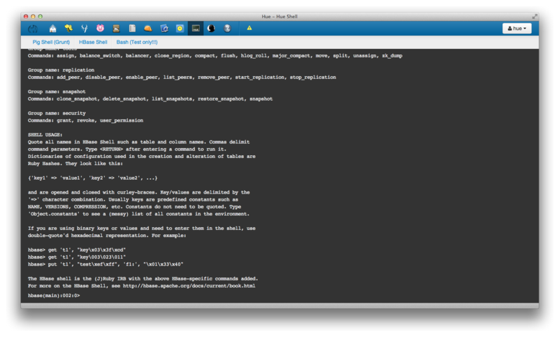

Pig Editor
The Pig Editor lets you edit your Pig script with autocompletion and syntax highlighting. Logs and results are displayed within this one-page app for a better interactivity. You can save your scripts or look at the already submitted ones.

Hue features a File Browser for HDFS, a Job Designer/Browser for MapReduce, query editors for
Hive, Pig and Cloudera Impala.
It also ships with an Oozie Application for creating workflows, various Shells and a collection of Hadoop API.

The Pig Editor lets you edit your Pig script with autocompletion and syntax highlighting. Logs and results are displayed within this one-page app for a better interactivity. You can save your scripts or look at the already submitted ones.

The Oozie Editor/Dashboard application allows you to define Oozie workflow/coordinator/bundle applications, run them, and view their information, logs and stop, pause, rerun them.

The Beeswax application enables you to perform queries on Apache Hive, a SQL like data warehousing system designed to work with Hadoop. You can run and manage Hive queries and download the results in a Microsoft Office Excel worksheet file or a comma-separated values file.

With its syntax hightlighting and autocomplete editor, the Impala application is tailored for quick data analysis. It will showcase the differences between Impala and Hive, especially its rapidity.

You can list and manage Hive tables and switch between databases easily. Table creation is available through a wizard as well as statistics, data loading and partition creation.

The File Browser application lets you browse, upload and manipulate files and directories in the Hadoop Distributed File System (HDFS).

The Hue Shell application provides access to the Pig and HBase command-line shells. The Shell application is designed to have the same look and feel as a Unix terminal. In addition to the shells configured by default, it is possible to include almost any process that exposes a command-line interface as an option in this Hue application.

The Job Designer application enables you to create and submit Hadoop MapReduce jobs to the Hadoop cluster. You can include variables with your jobs to enable you and other users to enter values for the variables when they run your job. The Job Designer supports MapReduce, streaming, and Java jobs.

The Job Browser application lets you to examine the Hadoop MapReduce jobs running on your Hadoop cluster. Job Browser presents the job and tasks in layers. The top layer is a list of jobs, and you can link to a list of that job's tasks. You can then view a task's attempts and the properties of each attempt, such as state, start and end time, and output size. To troubleshoot failed jobs, you can also view the logs of each attempt in one click.

The User Admin application lets an administrator add, delete, and manage Hue user accounts and groups, and configure group permissions. The permissions allow users, based on their group membership, to launch Hue applications and use application features. You can add users and groups individually, or import them from an LDAP directory.

Hue is a starting point for exploration and real time interaction with Apache Hadoop.
Hue's target is the Hadoop user experience and lets users avoid the command line interface and have them focus on getting results faster and sooner.

Hue is a mature web-based application used from fortune 500 companies to startups, students and data scientist/analysts.
Hue 2.3.0 is the latest and it was released on April 15th, 2013. For more info about the releases, click here.

Hue comes with an SDK that lets you reuse Hue's libraries so you can start building apps on top of Hadoop.
Clone the project with Git and start building awesome software for Hadoop:
$ git clone git://github.com/cloudera/hue
You can discuss about your ideas, ask your questions or make us aware of bugs online on the Hue User Google Group or in real life, joining one of the regular Hue Meetups.
If you want to show us what you've built or encounter problems while using the SDK, feel free to write on
the Hue Dev Google
Group.
You can see the what the current
backlog looks like and have a look at the Code
Reviews for the issues.
The quickest way to get a general feeling of Hue is through Cloudera's
Distribution for Apache Hadoop (CDH) version 4.2.
There are several Quick start Virtual Machines available for you.